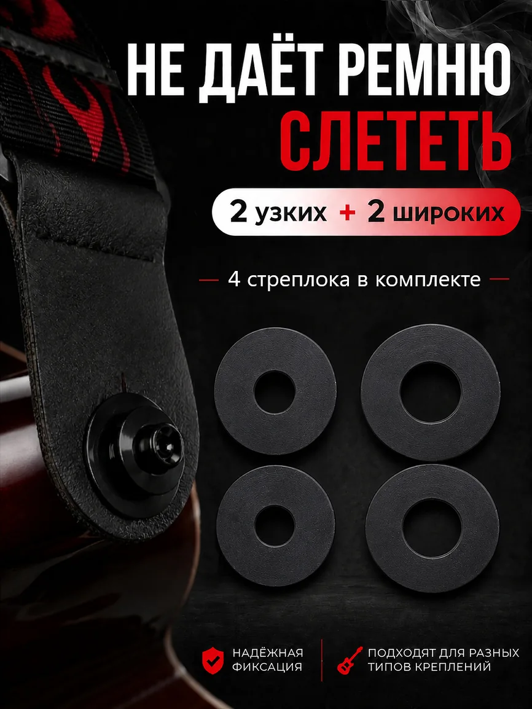

Силиконовые стреплоки для гитары, 4 шт.
Стреплоки для гитары силиконовые 4 шт. — надежная фиксация ремня для электрогитары, акустической и бас-гитары.
Комплект включает 4 стреплока двух типов: 2 узких + 2 широких, что позволяет использовать их с разными вариантами креплений ремня. В отличие от стандартных комплектов с одинаковыми фиксаторами, такой набор помогает подобрать более подходящий вариант под вашу гитару и ремень.
Стреплоки предотвращают случайное соскальзывание ремня во время игры, репетиций и выступлений, обеспечивая дополнительную фиксацию и комфорт при использовании инструмента.
Мягкий силикон плотно прилегает к креплению, не повреждает поверхность и не царапает металлическую фурнитуру. Фиксаторы легко устанавливаются без инструментов и при необходимости быстро снимаются.
Подходят для
- электрогитары
- акустической гитары
- бас-гитары
- классической гитары
- большинства стандартных ремней
Преимущества
- 4 стреплока в комплекте
- 2 узких + 2 широких модели
- подходят для стандартных и конусных креплений
- мягкий силикон
- быстрая установка
- надежная фиксация ремня
- компактный размер
Стреплоки для гитары — простой аксессуар, который помогает снизить риск случайного отстегивания ремня и делает использование инструмента более комфортным.